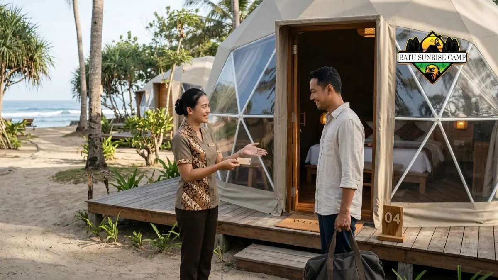

Cara memilih vendor sewa glamping dome pantai adalah memeriksa legalitas, ulasan, kondisi dome, fasilitas, dan kejelasan syarat pemesanan sebelum membayar uang muka.
- Vendor yang layak dipercaya memiliki identitas usaha jelas, ulasan konsisten, dan syarat pemesanan tertulis.
- Pasar glamping masih terfragmentasi: Global Market Insights mencatat pemimpin pasar dunia hanya memegang pangsa lebih dari 4,5 persen pada 2025.
- Ajukan pertanyaan tentang fasilitas, kapasitas, listrik, keamanan, dan kebijakan pembatalan sebelum memesan.
- Simpan konfirmasi pemesanan tertulis dan bukti pembayaran sampai check-out selesai.
Apa Kriteria Vendor Glamping Dome Pantai yang Layak Dipercaya?
Vendor glamping dome pantai yang layak dipercaya memiliki identitas usaha jelas, foto dan ulasan konsisten, respons cepat, serta syarat pemesanan dan pembatalan yang tertulis rinci.
Global Market Insights dalam laporan April 2026 mencatat bahwa pemimpin pasar glamping dunia hanya menguasai pangsa sedikit di atas 4,5 persen pada 2025.
Angka ini umumnya menandakan pasar yang terfragmentasi dengan banyak penyedia kecil, sehingga kualitas layanan antar vendor bisa sangat berbeda.
Kriteria yang patut diperiksa meliputi:
- Identitas usaha. Nama bisnis, alamat lokasi, dan kontak resmi dapat dihubungi.
- Konsistensi informasi. Foto, deskripsi, dan harga sama di berbagai kanal.
- Respons dan transparansi. Penyedia menjawab pertanyaan dengan jelas dan tidak menekan penyewa untuk segera membayar.
- Kondisi dome dan perawatan. Foto atau video terbaru menunjukkan area bersih dan terawat.
- Kebijakan tertulis. Aturan pembatalan, penjadwalan ulang, dan tata tertib tersedia sebelum pembayaran.
Bagaimana Cara Memeriksa Legalitas dan Reputasi Vendor?
Cara memeriksa legalitas dan reputasi vendor glamping adalah meminta identitas usaha, mencari ulasan di beberapa kanal independen, dan menghubungi penyedia untuk memastikan jawaban konsisten.
Mulailah dengan mencari nama usaha dan lokasi di mesin pencari, peta digital, dan media sosial. Bandingkan ulasan dari beberapa sumber, bukan hanya satu halaman.
Ulasan yang mendetail dan beragam biasanya lebih dapat dipercaya daripada banyak komentar seragam dengan kalimat serupa.
Minta informasi usaha seperti nama pemilik atau pengelola dan alamat lokasi. Bila memungkinkan, hubungi penyedia lewat telepon atau panggilan video dan minta ditunjukkan kondisi dome secara langsung. Penyedia profesional umumnya bersedia menunjukkan kondisi lokasi tanpa keberatan.
Apa yang Perlu Ditanyakan kepada Vendor Sebelum Memesan?
Pertanyaan penting sebelum memesan glamping dome pantai mencakup kapasitas, fasilitas, listrik dan air, keamanan, aturan pantai, kebijakan cuaca buruk, dan total biaya akhir.
- Berapa kapasitas maksimal dome dan apakah ada biaya untuk tamu tambahan?
- Apakah listrik dan air bersih tersedia sepanjang malam?
- Apa saja yang sudah termasuk dalam harga, seperti sarapan, pajak, dan layanan?
- Bagaimana jarak dome ke garis pantai dan apakah ada penjaga atau petugas keamanan malam?
- Apakah ada aturan tentang api unggun, musik, hewan peliharaan, atau drone?
- Apa kebijakan bila cuaca ekstrem membuat penginapan tidak aman?
- Bagaimana prosedur pembatalan, penjadwalan ulang, dan pengembalian uang muka?
Simpan seluruh jawaban dalam bentuk tulisan, seperti pesan atau surel, agar dapat dijadikan rujukan bila terjadi perbedaan di kemudian hari.
Bagaimana Prosedur Pemesanan Sewa Glamping Dome Pantai Langkah demi Langkah?
Prosedur pemesanan sewa glamping dome pantai terdiri dari memilih tanggal dan tipe, meminta penawaran tertulis, membayar uang muka, menerima konfirmasi, lalu menyiapkan kedatangan.
- Tentukan kebutuhan. Catat tanggal, jumlah tamu, jumlah malam, dan kebutuhan khusus.
- Minta penawaran tertulis. Pastikan memuat tipe dome, fasilitas, total harga, dan kebijakan pembatalan.
- Verifikasi vendor. Lakukan pemeriksaan legalitas, ulasan, dan kondisi dome seperti dijelaskan di atas.
- Bayar uang muka. Gunakan rekening atas nama bisnis atau pengelola yang jelas, dan simpan bukti transfer.
- Terima konfirmasi pemesanan. Pastikan dokumen mencantumkan tanggal, tipe, harga, dan syarat.
- Konfirmasi ulang sebelum berangkat. Hubungi vendor satu atau dua hari sebelumnya untuk memeriksa jadwal, cuaca, dan jam check-in.
Gambaran umum layanan dan faktor lain dapat dibaca di panduan sewa tenda glamping dome pantai.
Apa Tanda Bahaya Penipuan atau Vendor Tidak Profesional?
Tanda bahaya vendor glamping dome pantai tidak profesional meliputi harga tidak wajar, desakan membayar cepat, identitas usaha tidak jelas, dan penolakan memberi bukti kondisi lokasi.
- Harga jauh di bawah pasar tanpa penjelasan. Penawaran yang terlalu murah perlu diverifikasi lebih lanjut.
- Tekanan untuk segera membayar. Pernyataan seperti "tinggal satu dome" yang terus diulang patut dicurigai.
- Rekening atas nama pribadi yang tidak terkait. Pastikan nama penerima sesuai dengan pengelola usaha.
- Tidak ada alamat atau lokasi yang jelas. Lokasi sebaiknya dapat ditemukan di peta digital.
- Menolak video atau panggilan. Penyedia terpercaya biasanya mau menunjukkan kondisi dome.
- Ulasan seragam dan tidak natural. Banyak komentar dengan kalimat sama dapat menandakan ulasan tidak asli.
Bila ada beberapa tanda ini sekaligus, tunda pembayaran dan cari penyedia lain. Rincian risiko harga murah juga dibahas dalam faktor penentu biaya sewa tenda glamping dome pantai.
Bagaimana Mengelola Check-in, Check-out, dan Kerusakan?
Mengelola check-in, check-out, dan kerusakan berarti memeriksa kondisi dome bersama petugas, mendokumentasikan kondisi awal, dan melaporkan masalah segera agar tidak menjadi sengketa.
Saat check-in, periksa kebersihan, kasur, kunci, lampu, stop kontak, dan kamar mandi bersama petugas. Foto kondisi awal dome dan catat bila ada kerusakan yang sudah ada.
Konfirmasi jam check-out, aturan pengembalian kunci, dan siapa yang dihubungi bila ada masalah di malam hari.

Proses serah terima dan pemeriksaan bersama kondisi fasilitas tenda glamping dome pantai saat check-in guna mencegah sengketa klaim kerusakan.
Saat check-out, rapikan barang, buang sampah pada tempatnya, dan minta petugas memeriksa dome bersama.
Jika ada klaim kerusakan, minta penjelasan tertulis dan bandingkan dengan foto kondisi awal. Dokumentasi yang rapi melindungi penyewa dan penyedia.
Kesimpulan
- Pilih vendor dengan identitas usaha jelas, ulasan konsisten, dan syarat tertulis.
- Ajukan pertanyaan tentang kapasitas, fasilitas, keamanan, dan kebijakan pembatalan sebelum membayar.
- Bayar uang muka hanya setelah vendor diverifikasi, dan simpan bukti transfer.
- Dokumentasikan kondisi dome saat check-in dan check-out.
- Waspadai harga tidak wajar dan desakan membayar cepat.
FAQ